Código
install.packages(c("readr", "dplyr", "tidyr", "ggplot2"))Nos enfocaremos en lo siguiente:
ggplot2.aes()) de propiedades fijas.Descarga y descomprime el material de la sesión datos_sesion_05_ggplot2.zip dentro de la carpeta data_raw/ de tu proyecto de RStudio. La estructura esperada es:
mi_proyecto/
├── mi_proyecto.Rproj
├── data_raw/
│ └── datos_sesion_05_ggplot2/
│ ├── anotaciones_figuras.tsv
│ ├── conteos_muestras.tsv
│ └── README.md
├── figures/
└── results/install.packages(c("readr", "dplyr", "tidyr", "ggplot2"))library(readr)
library(dplyr)
Adjuntando el paquete: 'dplyr'The following objects are masked from 'package:stats':
filter, lagThe following objects are masked from 'package:base':
intersect, setdiff, setequal, unionlibrary(tidyr)
library(ggplot2)
carpeta <- "data_raw/datos_sesion_05_ggplot2"
stopifnot(dir.exists(carpeta))
conteos <- read_tsv(
file.path(carpeta, "conteos_muestras.tsv"),
col_types = cols(
muestra = col_character(), grupo = col_character(),
gene_id = col_character(), conteo = col_double()
)
)
anotaciones <- read_tsv(
file.path(carpeta, "anotaciones_figuras.tsv"),
col_types = cols(
gene_id = col_character(), contig = col_character(),
start = col_double(), end = col_double(),
functional_category = col_character()
)
)
stopifnot(
!anyDuplicated(conteos[c("muestra", "gene_id")]),
!anyDuplicated(anotaciones$gene_id),
all(!is.na(conteos$conteo) & conteos$conteo >= 0)
)
datos <- conteos %>%
left_join(anotaciones, by = join_by(gene_id), relationship = "many-to-one")
stopifnot(nrow(datos) == nrow(conteos), !anyNA(datos$functional_category))
glimpse(datos)Rows: 192
Columns: 8
$ muestra <chr> "M01", "M01", "M01", "M01", "M01", "M01", "M01", "…
$ grupo <chr> "A", "A", "A", "A", "A", "A", "A", "A", "A", "A", …
$ gene_id <chr> "gene_001", "gene_002", "gene_003", "gene_004", "g…
$ conteo <dbl> 0, 0, 8, 7, 7, 4, 3, 13, 2, 13, 1, 0, 2, 6, 3, 16,…
$ contig <chr> "ctgA", "ctgA", "ctgA", "ctgA", "ctgA", "ctgA", "c…
$ start <dbl> 50, 550, 1050, 1550, 2050, 2550, 3050, 3550, 50, 5…
$ end <dbl> 200, 737, 1274, 1811, 2348, 2885, 3422, 3959, 206,…
$ functional_category <chr> "replication", "unknown", "defense", "energy", "en…Comprueba qué representa una fila: aquí es una combinación de muestra y gen. Una misma categoría funcional aparece en varios genes y muestras. Si deseas contar genes distintos por categoría, primero debes eliminar las repeticiones por muestra. Si deseas mostrar conteos, debes agregarlos de manera explícita. La función de visualización no decide qué pregunta biológica quieres responder.
Un gráfico es una respuesta visual a una pregunta. Antes de escribir ggplot(), identifica:
| Pregunta descriptiva | Preparación necesaria | Figura posible |
|---|---|---|
| ¿Cuántos genes hay en cada categoría funcional? | Un registro por gen | Barras |
| ¿Cómo se distribuyen las longitudes anotadas? | Calcular end - start |
Histograma |
| ¿Qué conteos aparecen por muestra? | Datos muestra–gen | Puntos o paneles |
| ¿Cómo varían los conteos de genes seleccionados? | Filtrar genes | Puntos y facetas |
Un gráfico de barras de número de genes anotados no representa abundancia biológica. Una barra de suma de conteos no equivale a expresión diferencial. La interpretación depende de la procedencia y preparación de los datos.
La estructura general es:
ggplot(data = tabla, mapping = aes(x = variable_x, y = variable_y)) +
geom_xxx() +
labs(title = "Título informativo", x = "Eje X", y = "Eje Y")ggplot() declara datos y mapeos; geom_*() indica cómo representarlos; labs(), scale_*(), facet_*() y theme_*() ajustan el significado y la presentación.
Las coordenadas de este conjunto sintético usan la convención inicio cero, fin exclusivo. Por tanto, la longitud es end - start.
genes <- anotaciones %>%
mutate(longitud = end - start)
stopifnot(all(genes$longitud > 0))
p_longitudes <- ggplot(genes, aes(x = longitud)) +
geom_histogram(binwidth = 50, boundary = 0,
fill = "#367A90", color = "white") +
labs(
title = "Distribución de longitudes anotadas",
subtitle = "Datos sintéticos; cada registro representa un gen",
x = "Longitud", y = "Número de genes"
) +
theme_minimal(base_size = 12)
p_longitudes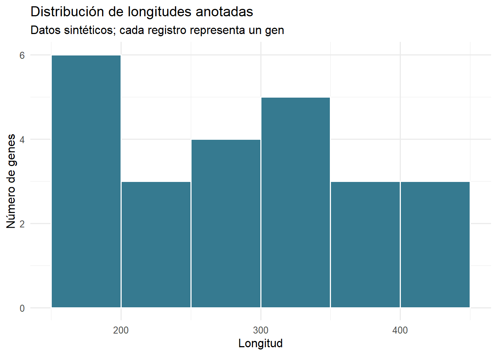
En este histograma, binwidth controla la anchura de los intervalos; cambiarlo modifica la representación visual.
aes()p_categorias <- genes %>%
count(functional_category, name = "n_genes") %>%
ggplot(aes(x = reorder(functional_category, n_genes), y = n_genes)) +
geom_col(fill = "#367A90") +
coord_flip() +
labs(
title = "Genes anotados por categoría funcional",
x = "Categoría funcional", y = "Número de genes"
) +
theme_minimal(base_size = 12)
p_categorias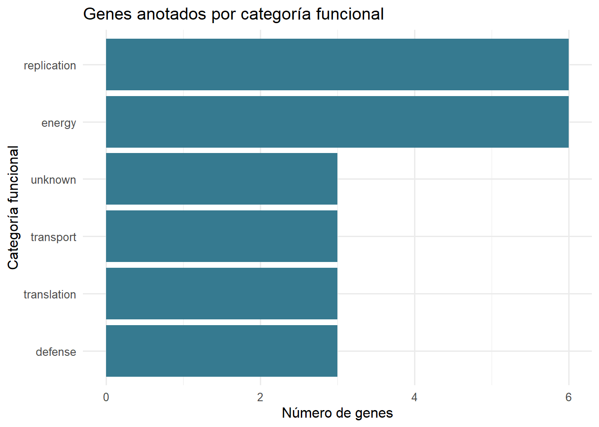
Aquí fill = "#367A90" está fuera de aes() porque asignamos un color fijo. Si escribiéramos aes(fill = functional_category), el color codificaría una variable y se generaría una leyenda.
geom_bar() y geom_col(): no hacen lo mismogeom_bar() cuenta filas automáticamente.geom_col() utiliza valores de y que ya calculaste.# Contar registros (un registro por gen en 'genes')
ggplot(genes, aes(x = functional_category)) +
geom_bar(fill = "#5C8798") +
coord_flip() +
labs(x = "Categoría funcional", y = "Número de genes") +
theme_minimal(base_size = 12)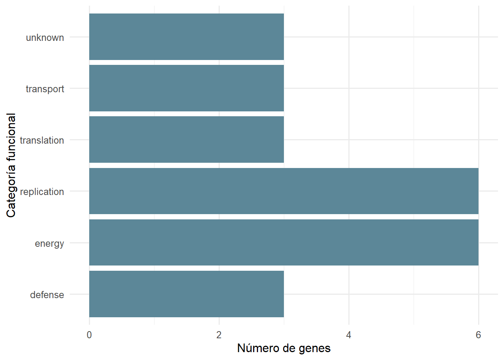
Si aplicáramos geom_bar() directamente a datos, contaríamos combinaciones muestra–gen, no genes únicos. Esto produciría un gráfico técnicamente válido pero con una interpretación distinta.
En ambos ejemplos obtenemos el número de genes por categoría funcional. La diferencia es que, con geom_col(), primero calculamos los conteos mediante count() y después los representamos. En cambio, geom_bar() realiza el conteo automáticamente a partir de las filas de la tabla original. Por tanto, si tenemos una fila por gen, ambos métodos producen las mismas frecuencias, aunque el orden de las categorías puede ser diferente.
facet_wrap()Supongamos que queremos comparar los conteos de distintos genes en las muestras de nuestro conjunto de datos.
Primero construimos una gráfica de puntos que reúna todas las observaciones:
ggplot(conteos, aes(x = gene_id, y = conteo, color = muestra)) +
#geom_point(color = "#367A90", size = 2.5) +
geom_point(size=2.5) +
labs(
title = "Conteos de genes en todas las muestras",
x = "Gen",
y = "Conteo",
color = "Muestra"
) +
theme_minimal(base_size = 12)+
theme(axis.text.x = element_text(angle = 45, hjust = 1))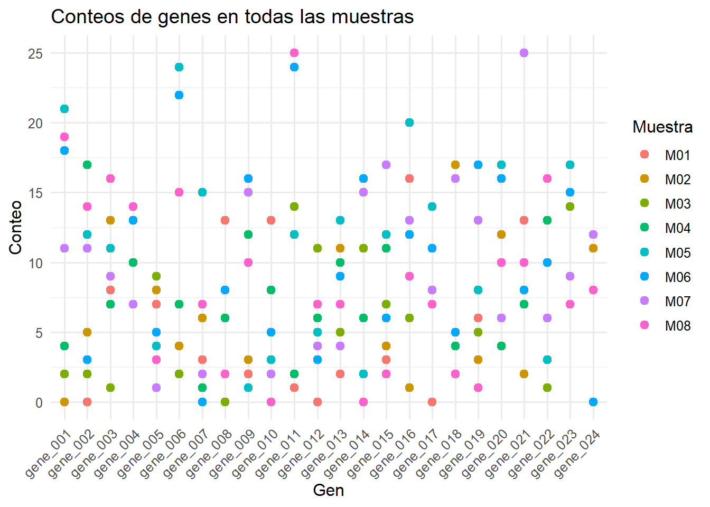
En esta figura, los conteos de todas las muestras aparecen juntos. Como un mismo gen puede tener distintos conteos según la muestra, podemos observar varios puntos para un mismo identificador, pero no distinguir fácilmente a qué muestra corresponde cada uno.
Para comparar los resultados por separado, utilizamos facet_wrap():
ggplot(conteos, aes(x = gene_id, y = conteo)) +
geom_point(color = "#367A90", size = 2.5) +
facet_wrap(~ muestra) +
labs(
title = "Conteos de genes por muestra",
x = "Gen",
y = "Conteo"
) +
theme_minimal(base_size = 12) +
theme(axis.text.x = element_text(angle = 90, hjust = 1))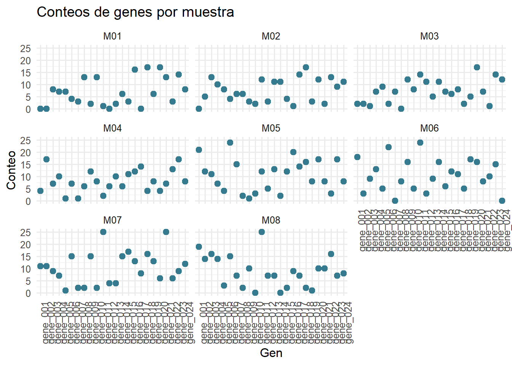
¿Qué hace facet_wrap(~ muestra)?
La función divide los datos según los valores de la columna muestra y construye un panel para cada una.
En cada panel se representan únicamente los conteos correspondientes a esa muestra.
Esto nos permite comparar visualmente:
Por defecto, todos los paneles utilizan las mismas escalas, lo que facilita la comparación de los valores.
Podemos construir un gráfico por etapas. En ggplot2, las capas se añaden con +; no se utiliza %>% para agregar una geometría. El pipe %>% sirve para preparar los datos que recibe ggplot().
p_base <- ggplot(genes, aes(x = longitud))
p_hist <- p_base + geom_histogram(binwidth = 50, fill = "steelblue", color = "white")
p_final <- p_hist + labs(x = "Longitud (nt)", y = "Número de genes") + theme_classic()
p_final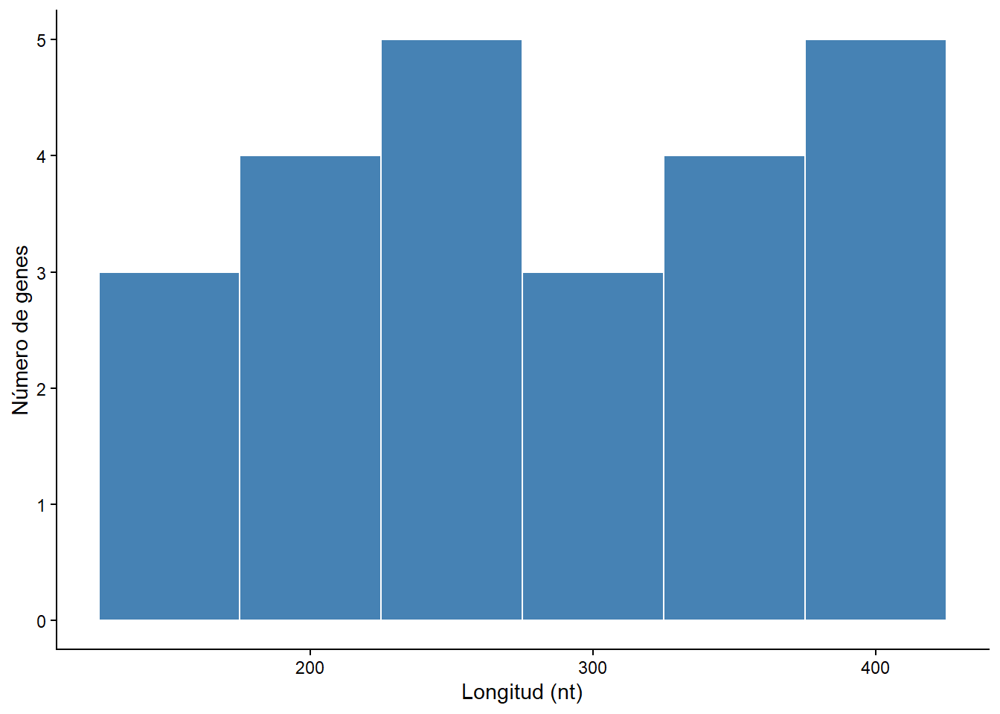
datos %>% filter(...) %>% ggplot(aes(...)) encadena transformaciones y funciones; ggplot(...) + geom_point() + labs(...) construye capas de una figura. No son operadores intercambiables.
gen_ejemplo <- datos %>%
filter(gene_id == "gene_001")
p_gen <- ggplot(gen_ejemplo, aes(x = muestra, y = conteo, color = grupo)) +
geom_point(size = 3) +
labs(
title = "Conteos observados para gene_001",
subtitle = "Datos sintéticos sin normalizar",
x = "Muestra", y = "Conteo (unidades arbitrarias)", color = "Grupo"
) +
theme_minimal(base_size = 12)
p_gen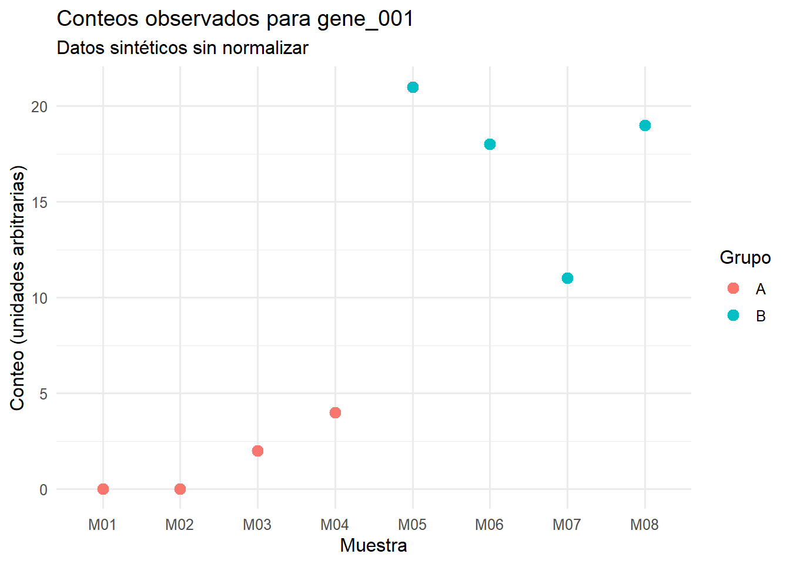
La codificación por color permite identificar el grupo de cada muestra. No implica que las diferencias sean significativas o atribuibles al grupo.
seleccion <- datos %>%
filter(gene_id %in% c("gene_001", "gene_002", "gene_003", "gene_004"))
p_paneles <- ggplot(seleccion, aes(x = muestra, y = conteo, color = grupo)) +
geom_point(size = 2.5) +
facet_wrap(~ gene_id, ncol = 2) +
labs(
title = "Conteos de cuatro genes en ocho muestras",
subtitle = "Datos sintéticos; comparación visual descriptiva",
x = "Muestra", y = "Conteo", color = "Grupo"
) +
theme_minimal(base_size = 11) +
theme(axis.text.x = element_text(angle = 45, hjust = 1))
p_paneles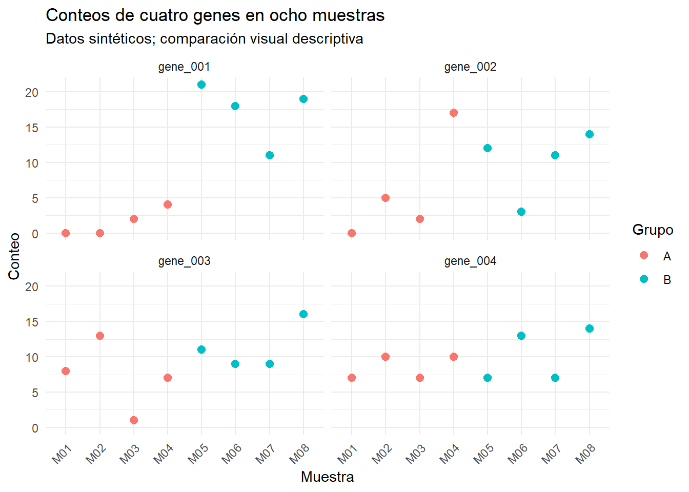
facet_wrap() divide el gráfico en paneles. Mantener una escala Y común facilita comparar magnitudes; usar scales = "free_y" puede facilitar ver patrones internos, pero dificulta comparar alturas entre paneles.
por_muestra_categoria <- datos %>%
group_by(muestra, grupo, functional_category) %>%
summarise(conteo_total = sum(conteo), .groups = "drop")
p_apilado <- ggplot(
por_muestra_categoria,
aes(x = muestra, y = conteo_total, fill = functional_category)
) +
geom_col() +
labs(
title = "Suma de conteos por categoría y muestra",
subtitle = "Datos sintéticos; conteos sin normalizar",
x = "Muestra", y = "Suma de conteos", fill = "Categoría"
) +
theme_minimal(base_size = 11) +
theme(axis.text.x = element_text(angle = 45, hjust = 1))
p_apilado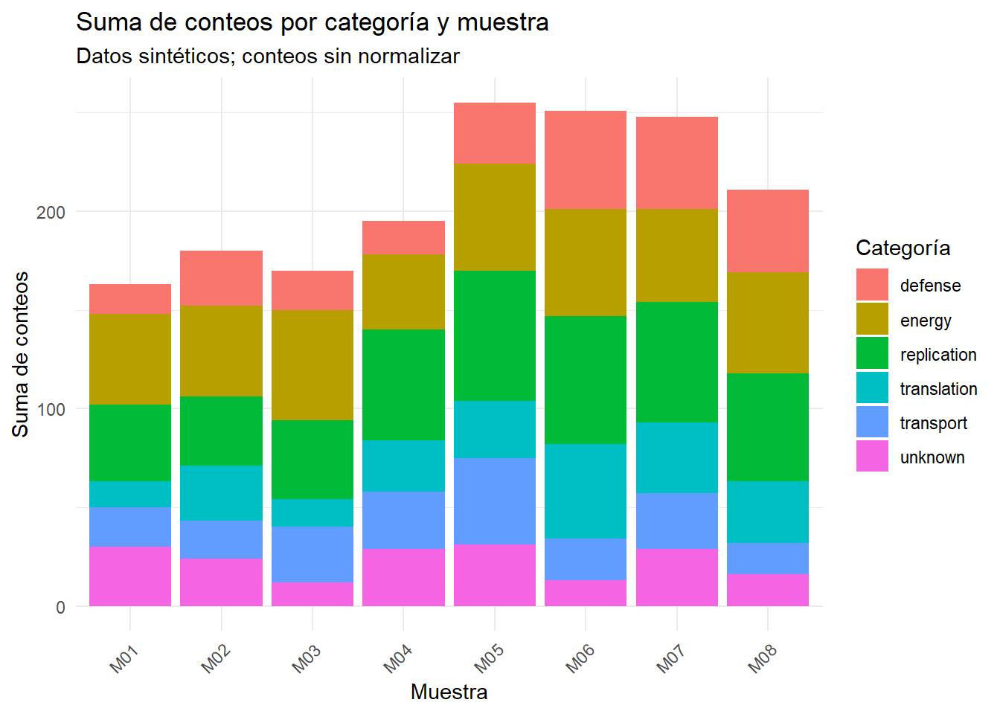
Las barras apiladas permiten ver composición en términos de conteos absolutos, pero los segmentos intermedios son difíciles de comparar. Además, no deben compararse como abundancias relativas entre muestras sin justificar la normalización y la comparabilidad de los conteos.
Un diagrama de caja (geom_boxplot()) resume la distribución de una variable numérica por categoría. No representa todas las observaciones por sí mismo, por lo que puede ser útil superponer los puntos originales con geom_jitter().
Usaremos las longitudes anotadas por contig. Cada punto corresponde a un gen; no estamos comparando muestras biológicas ni realizando pruebas de significancia.
ggplot(genes, aes(x = contig, y = longitud)) +
geom_boxplot(fill = "lightblue", outlier.shape = NA) +
geom_jitter(width = 0.12, height = 0, alpha = 0.7, size = 2) +
labs(
title = "Longitudes de genes anotados por contig",
subtitle = "Datos sintéticos: cada punto es un gen",
x = "Contig", y = "Longitud (nt)"
) +
theme_minimal()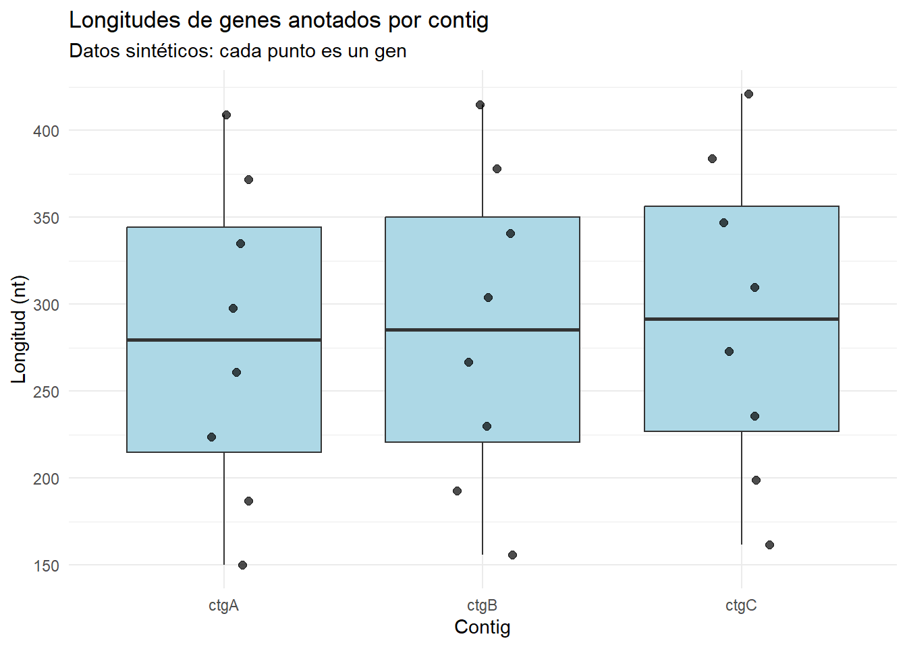
La línea central de la caja corresponde a la mediana; los bordes suelen representar el primer y tercer cuartil. Los bigotes siguen una regla de representación y no son intervalos de confianza. Un boxplot puede resultar poco informativo cuando hay muy pocas observaciones por grupo.
p_publicacion <- p_gen +
scale_color_manual(values = c(A = "#267B91", B = "#C17B40")) +
theme_classic(base_size = 13) +
theme(legend.position = "top")
p_publicacion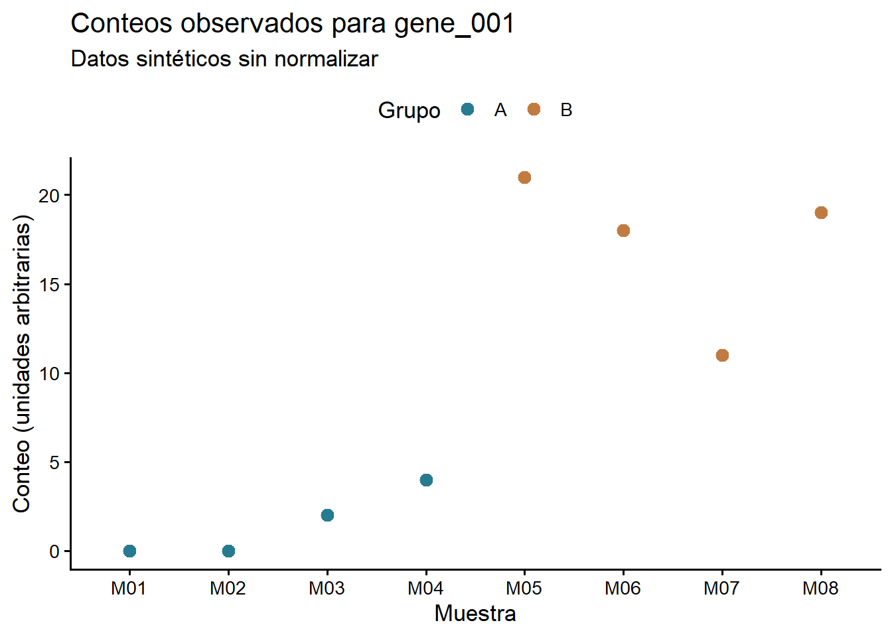
En este ejemplo elegimos una paleta fija para grupos nominales. Evita usar únicamente rojo y verde para diferenciar categorías y comprueba que la información sea interpretable también en escala de grises.
dir.create("figures", showWarnings = FALSE, recursive = TRUE)
ggsave(
filename = "figures/05_conteos_gene_001.png",
plot = p_publicacion,
width = 7, height = 4, units = "in", dpi = 300
)
ggsave(
filename = "figures/05_conteos_gene_001.pdf",
plot = p_publicacion,
width = 7, height = 4, units = "in"
)PNG es un formato de mapa de bits útil para presentaciones; PDF permite conservar gráficos vectoriales cuando sus elementos son compatibles. El tamaño físico y la resolución importan tanto como el código.
En ggplot2, una variable categórica se puede representar mediante color o fill. Si queremos que la leyenda aparezca automáticamente, mapeamos la variable dentro de aes().
# Cada punto representa un registro muestra–gen.
ggplot(datos %>% filter(gene_id == "gene_002"),
aes(x = muestra, y = conteo, color = grupo)) +
geom_point(size = 3) +
scale_color_brewer(palette = "Dark2") +
labs(title = "Conteos sintéticos de gene_002", x = "Muestra",
y = "Conteo sin normalizar", color = "Grupo") +
theme_minimal()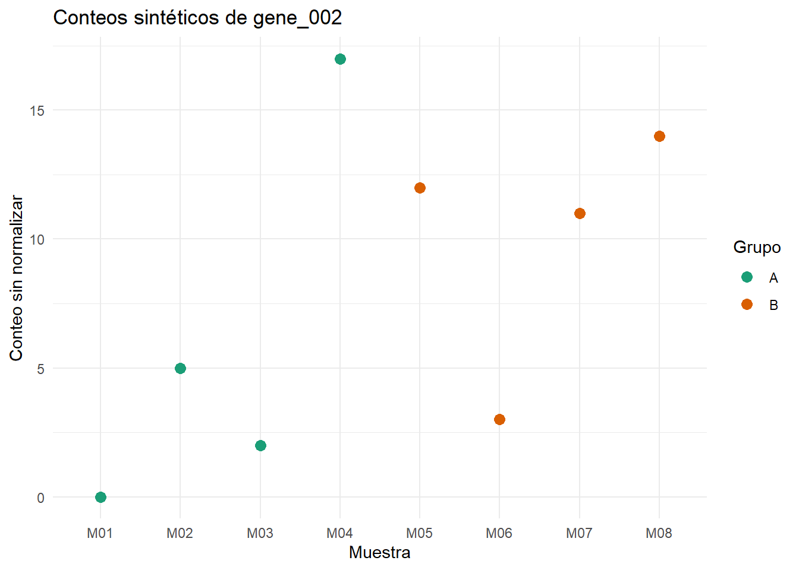
Escalas y límites: usar coord_cartesian(ylim = c(0, 100)) cambia la ventana visible sin eliminar registros del cálculo de una geometría estadística. En cambio, scale_y_continuous(limits = c(0, 100)) puede descartar valores fuera del intervalo. No recortes ejes para ocultar observaciones; explica siempre qué se muestra.
Para figuras con muchas categorías, considera coord_flip(), rotar etiquetas, usar paneles o seleccionar una pregunta más concreta antes de aumentar indiscriminadamente el tamaño de la figura.
En un gráfico con varias capas es importante decidir dónde se declara una estética. Si la escribimos dentro de ggplot(aes(...)), las capas siguientes la heredan, a menos que la reemplacemos. Si la escribimos dentro de una geometría, afecta solamente a esa capa.
Consideremos los conteos de un mismo gen en distintas muestras. El primer gráfico asigna color = grupo de manera global:
datos_gen <- datos %>% filter(gene_id == "gene_005")
g_global <- ggplot(datos_gen, aes(x = muestra, y = conteo, color = grupo)) +
geom_point(size = 3) +
geom_line(aes(group = grupo), linewidth = 0.7) +
labs(title = "Color definido globalmente", x = "Muestra", y = "Conteo") +
theme_minimal()
g_global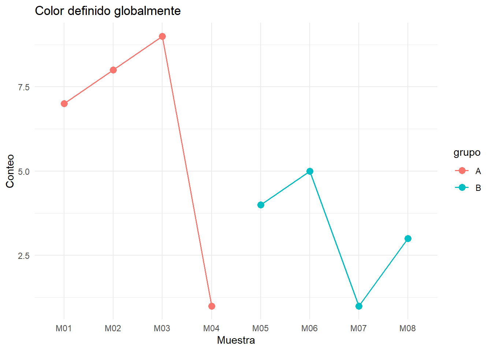
Las líneas anteriores son solo un recurso visual para ilustrar la herencia de estéticas: conectar muestras distintas no representa una trayectoria temporal ni una relación biológica entre ellas. Por eso, para comparar muestras independientes suele ser preferible mostrar únicamente los puntos.
Ahora indicamos que el color dependa del grupo solo en los puntos:
g_local <- ggplot(datos_gen, aes(x = muestra, y = conteo)) +
geom_point(aes(color = grupo), size = 3) +
labs(title = "Color definido localmente", x = "Muestra", y = "Conteo") +
theme_minimal()
g_local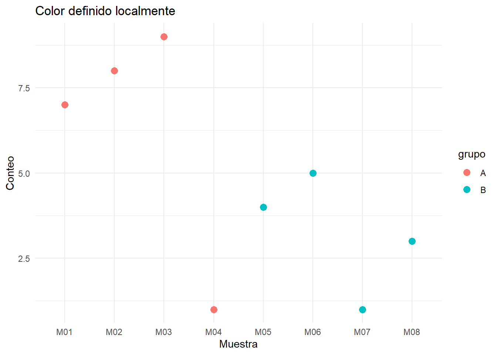
En ambos casos, grupo es una variable y debe escribirse dentro de aes(). En cambio, color = "steelblue" fuera de aes() indica un color fijo.
g_fijo <- ggplot(datos_gen, aes(x = muestra, y = conteo)) +
geom_point(color = "steelblue", size = 3) +
theme_minimal()
g_fijo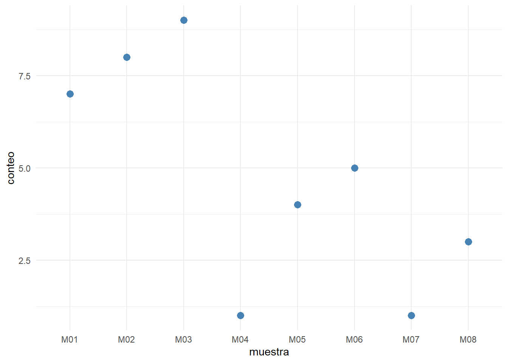
aes(color = "steelblue") no significa lo mismo que color = "steelblue". En el primer caso, ggplot2 interpreta el texto como una categoría y construye una escala y, posiblemente, una leyenda. En el segundo caso, fija directamente el color de los puntos.
Las escalas controlan cómo se traducen los valores a posiciones, colores y tamaños. No son equivalentes a modificar los datos originales.
En una figura de conteos, una transformación logarítmica puede ser útil cuando los valores varían mucho, pero el logaritmo de cero no está definido. Para visualizar datos con ceros, podemos crear una columna log10(conteo + 1) y etiquetar explícitamente la transformación:
datos_log <- datos %>% mutate(log_conteo = log10(conteo + 1))
ggplot(datos_log, aes(x = log_conteo)) +
geom_histogram(binwidth = 0.2, fill = "steelblue", color = "white") +
labs(x = "log10(conteo + 1)", y = "Número de registros",
title = "Distribución de conteos transformados") +
theme_minimal()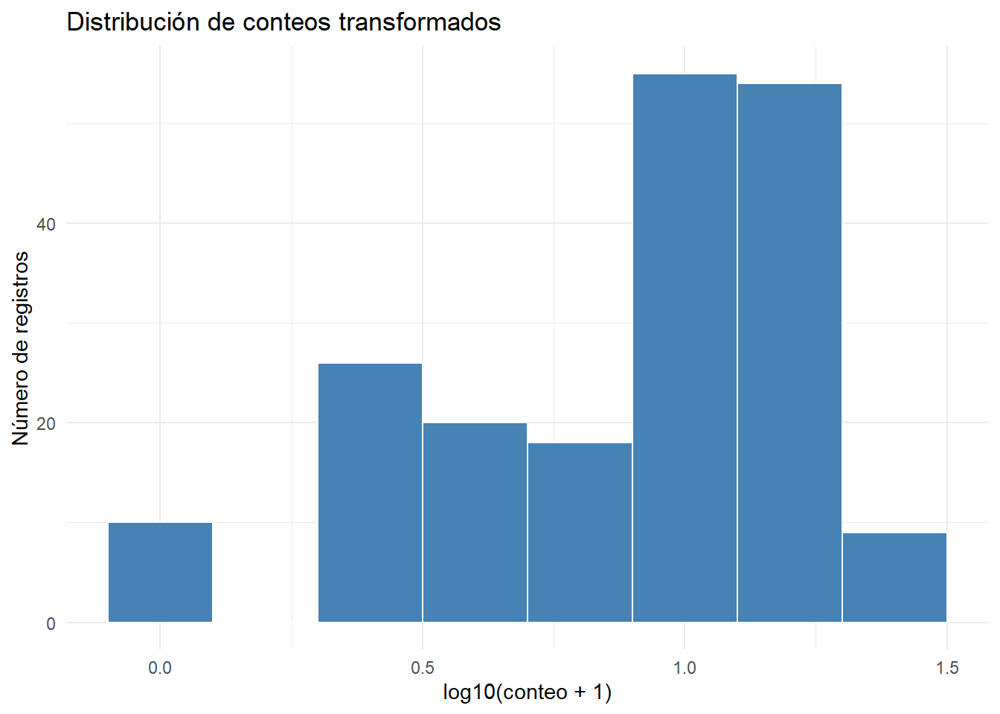
Este cambio es únicamente de representación. No convierte los conteos en mediciones normalizadas ni justifica comparaciones biológicas entre muestras.
ggplot(datos_gen, aes(x = muestra, y = conteo, fill = grupo)) +
geom_col() +
scale_fill_manual(values = c(A = "#0072B2", B = "#D55E00")) +
labs(x = "Muestra", y = "Conteo", fill = "Grupo",
title = "Conteos de un gen por muestra") +
theme_minimal()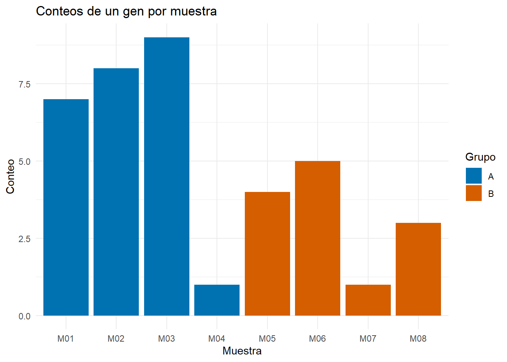
scale_fill_manual() permite fijar los colores de cada categoría. Se recomienda conservar una correspondencia estable entre grupos y colores en todas las figuras del mismo proyecto. También podemos usar scale_x_discrete() para controlar el orden de categorías y scale_y_continuous() para modificar etiquetas o marcas.
p_base <- ggplot(datos, aes(x = gene_id, y = conteo)) +
geom_point(alpha = 0.35) +
theme_minimal() +
theme(axis.text.x = element_text(angle = 90, hjust = 1))
p_base + coord_cartesian(ylim = c(0, 15))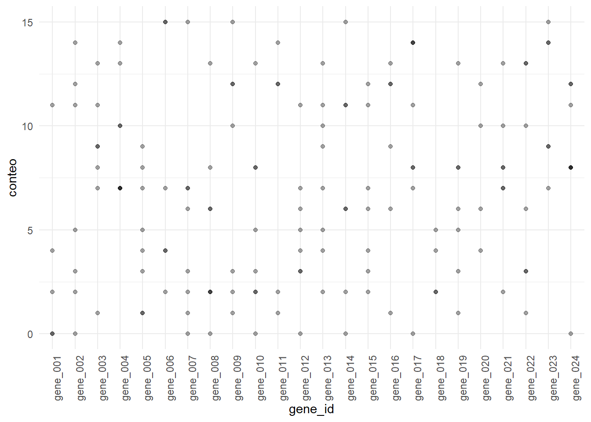
coord_cartesian(ylim = ...) acerca la vista sin eliminar los datos antes de calcular las estadísticas de las capas. En cambio, scale_y_continuous(limits = ...) convierte los valores fuera del rango en ausentes para las capas, lo que puede modificar los cálculos o provocar advertencias. Esta distinción importa especialmente en histogramas, cajas y líneas de ajuste.
theme_minimal(), theme_classic() y theme_bw() ofrecen puntos de partida distintos. La función theme() permite modificar elementos específicos sin reconstruir el gráfico.
p_tema <- ggplot(datos_gen, aes(x = muestra, y = conteo, fill = grupo)) +
geom_col() +
labs(title = "Conteos por muestra", x = "Muestra", y = "Conteo")
p_tema + theme_bw(base_size = 12) +
theme(
plot.title = element_text(face = "bold"),
axis.text.x = element_text(angle = 45, hjust = 1),
legend.position = "bottom"
)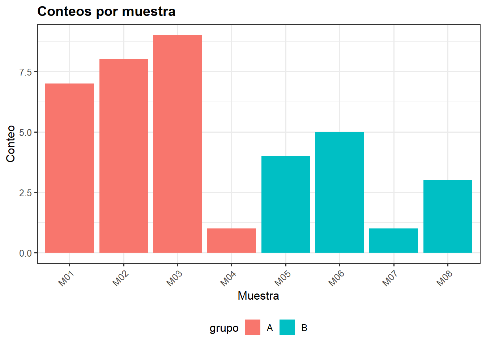
Conviene priorizar la legibilidad: títulos informativos, unidades correctas, contraste suficiente, tamaños adecuados y leyendas solo cuando aporten información.
En esta parte ya no aprenderemos geometrías de forma aislada. Partiremos de una pregunta descriptiva, prepararemos los datos necesarios, elegiremos una representación y discutiremos qué permite concluir.
Unidad de observación: un gen anotado, no una fila de la tabla de conteos por muestra. Si contáramos directamente las filas de datos, repetiríamos cada gen tantas veces como muestras lo contengan.
resumen_categorias <- anotaciones %>%
count(functional_category, name = "n_genes") %>%
arrange(desc(n_genes))
resumen_categorias# A tibble: 6 × 2
functional_category n_genes
<chr> <int>
1 energy 6
2 replication 6
3 defense 3
4 translation 3
5 transport 3
6 unknown 3ggplot(resumen_categorias,
aes(x = reorder(functional_category, n_genes), y = n_genes)) +
geom_col(fill = "steelblue") +
coord_flip() +
labs(title = "Genes anotados por categoría funcional",
x = "Categoría funcional", y = "Número de genes") +
theme_minimal()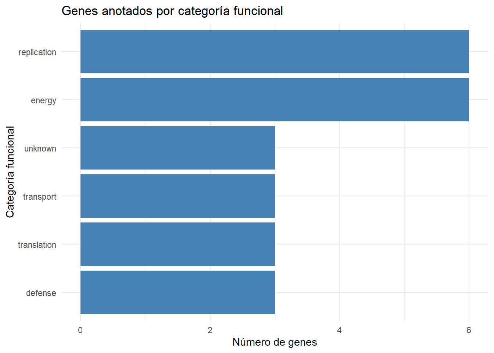
Interpretación: las barras representan el número de genes en cada categoría del archivo sintético. No representan conteos de lecturas, abundancia de genes ni actividad biológica.
Para explorar una relación entre dos variables numéricas podemos utilizar un diagrama de dispersión. Aquí la longitud es una propiedad del gen y el conteo corresponde a una combinación muestra–gen; por ello, un mismo gen aparecerá varias veces con la misma longitud.
datos_longitud <- datos %>%
mutate(longitud = end - start)
ggplot(datos_longitud, aes(x = longitud, y = conteo, color = grupo)) +
geom_point(alpha = 0.65, size = 2) +
labs(title = "Longitud anotada y conteos sintéticos",
x = "Longitud anotada (nt)", y = "Conteo", color = "Grupo") +
theme_minimal()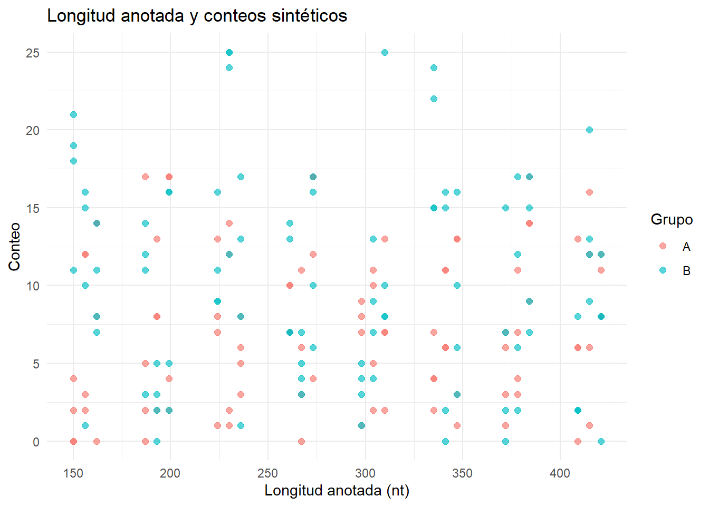
Preguntas para discutir: ¿hay una tendencia visual clara? ¿Qué cambia si coloreamos por grupo? ¿Por qué no sería correcto tratar los puntos correspondientes a un mismo gen como observaciones completamente independientes? Una asociación visual no demuestra causalidad.
Una misma tabla puede representarse de formas distintas. Compare las barras agrupadas y una matriz de colores; ninguna es universalmente mejor.
comparacion <- datos %>%
filter(gene_id %in% c("gene_001", "gene_005", "gene_010"))
fig_barras <- ggplot(comparacion,
aes(x = muestra, y = conteo, fill = gene_id)) +
geom_col(position = "dodge") +
labs(title = "Comparación con barras agrupadas",
x = "Muestra", y = "Conteo", fill = "Gen") +
theme_minimal() +
theme(axis.text.x = element_text(angle = 45, hjust = 1))
fig_matriz <- ggplot(comparacion,
aes(x = muestra, y = gene_id, fill = conteo)) +
geom_tile(color = "white") +
scale_fill_gradient(low = "white", high = "steelblue") +
labs(title = "Comparación mediante matriz de colores",
x = "Muestra", y = "Gen", fill = "Conteo") +
theme_minimal()
fig_barras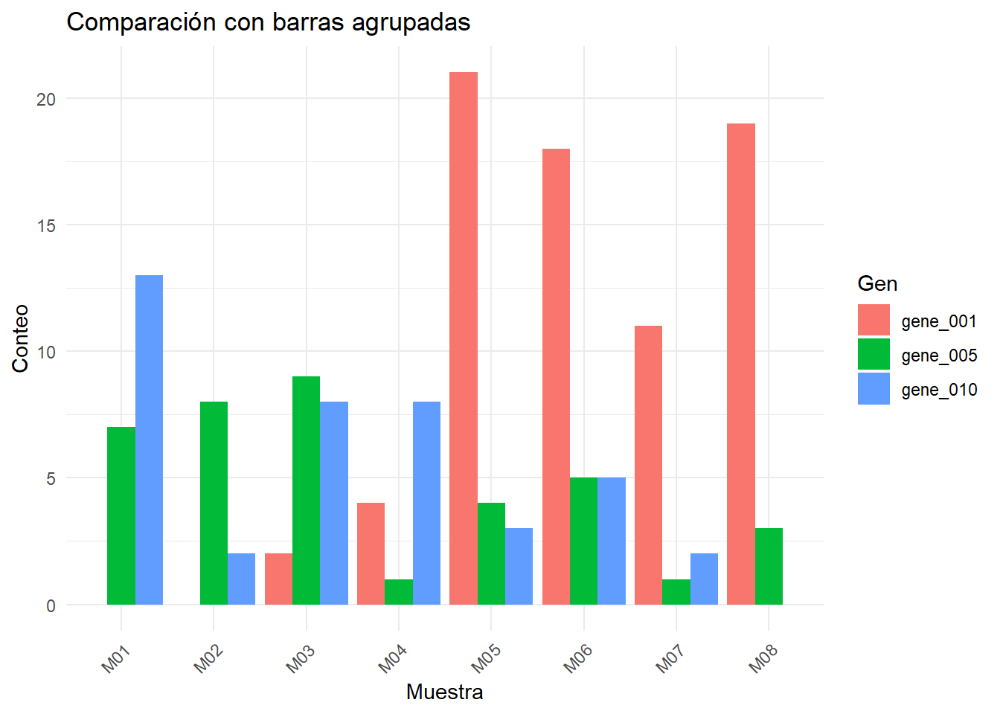
fig_matriz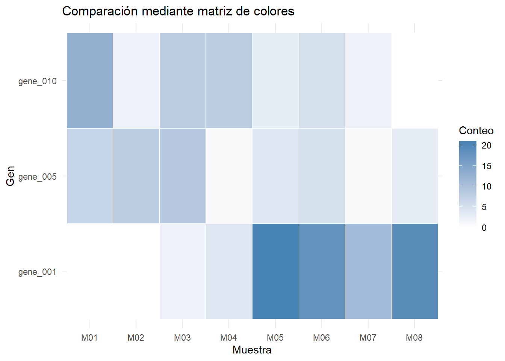
Las barras facilitan comparar alturas cuando hay pocos genes. La matriz de colores puede ser más compacta al aumentar el número de genes, aunque resulta menos precisa para leer diferencias pequeñas. En ambos casos los valores son conteos sin normalizar; no se deben interpretar como evidencia de expresión diferencial.
Para cada figura, escribe cuatro elementos:
Evita frases como «la figura demuestra que el grupo A tiene mayor expresión». Prefiere descripciones precisas, por ejemplo: «en estos datos sintéticos, algunos conteos son mayores en determinadas muestras; no se ha evaluado su comparabilidad biológica».
En la sesión siguiente aprenderemos a documentar y comunicar análisis reproducibles mediante Quarto. La exploración visual y la interpretación de figuras ya forman parte de esta sesión conjunta.
Para practicar después de clase. Las siguientes herramientas complementan los contenidos esenciales. No es necesario desarrollarlas todas en los 150 minutos presenciales.
geom_jitter()Cuando muchos registros comparten coordenadas, los puntos pueden ocultarse unos detrás de otros. geom_jitter() añade una pequeña separación visual; no modifica la tabla original.
ggplot(datos, aes(x = grupo, y = conteo, color = grupo)) +
geom_jitter(width = 0.15, height = 0, alpha = 0.6) +
labs(x = "Grupo", y = "Conteo", title = "Observaciones individuales") +
theme_minimal()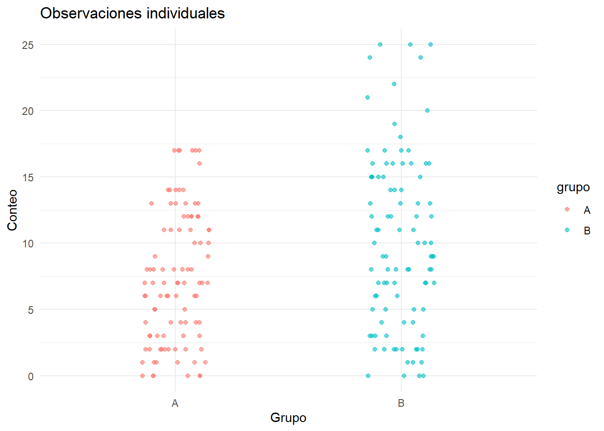
geom_violin()Un diagrama de violín representa una estimación suavizada de la distribución. No equivale a mostrar los valores exactos; con muestras pequeñas puede resultar engañoso. Aquí se usa para comparar visualmente con el diagrama de caja.
ggplot(datos, aes(x = grupo, y = conteo, fill = grupo)) +
geom_violin(alpha = 0.4, trim = FALSE) +
geom_jitter(width = 0.12, alpha = 0.35, size = 1) +
labs(x = "Grupo", y = "Conteo", title = "Distribución y registros") +
theme_minimal()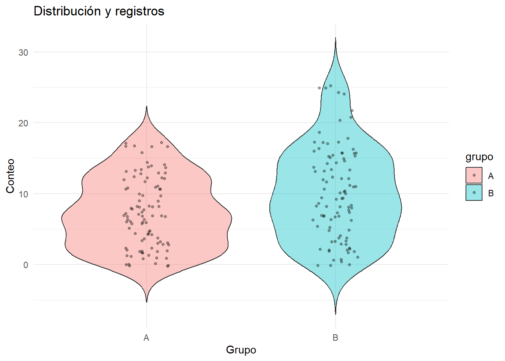
Como cada muestra aporta múltiples genes, los puntos no son réplicas independientes. Esta figura es descriptiva y no debe utilizarse para inferir diferencias entre grupos.
facet_grid()facet_wrap() crea paneles para una variable categórica; facet_grid() permite organizar los paneles en filas y columnas mediante dos variables.
datos_panel <- datos %>%
filter(gene_id %in% c("gene_001", "gene_005", "gene_010"))
ggplot(datos_panel, aes(x = muestra, y = conteo)) +
geom_col(fill = "steelblue") +
facet_grid(grupo ~ gene_id) +
labs(x = "Muestra", y = "Conteo") +
theme_minimal() +
theme(axis.text.x = element_text(angle = 90, hjust = 1))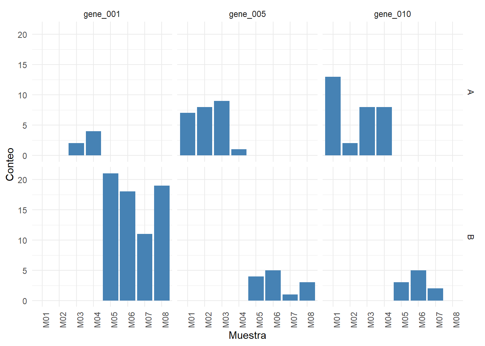
geom_line() conecta valores en orden creciente de la variable horizontal. Solo debe utilizarse cuando el orden tiene significado, por ejemplo, mediciones tomadas en diferentes tiempos o posiciones de una secuencia. No es apropiado conectar muestras independientes únicamente porque sus nombres tengan un orden alfabético.
Construiremos un ejemplo de posiciones y cobertura artificiales:
cobertura <- tibble(
posicion = seq(100, 1000, by = 100),
cobertura = c(12, 18, 15, 22, 27, 25, 19, 17, 14, 10)
)
ggplot(cobertura, aes(x = posicion, y = cobertura)) +
geom_line(linewidth = 0.8, color = "steelblue") +
geom_point(size = 2) +
labs(x = "Posición (nt)", y = "Cobertura artificial",
title = "Ejemplo ilustrativo de valores a lo largo de una secuencia") +
theme_minimal()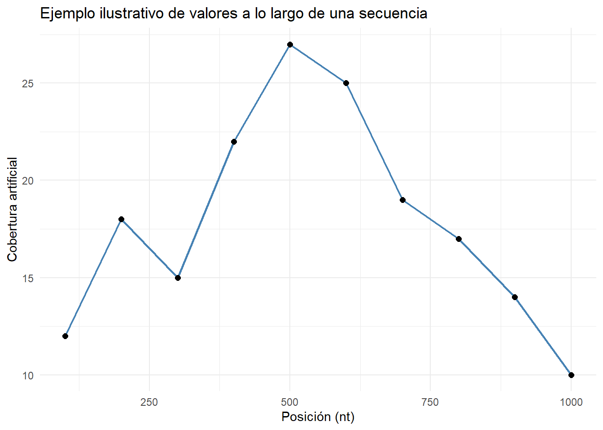
geom_tile()Cuando queremos comparar muchos genes y muestras, una matriz de colores puede ser más compacta que numerosos gráficos de barras.
datos_tile <- datos %>% filter(gene_id %in% paste0("gene_", sprintf("%03d", 1:10)))
ggplot(datos_tile, aes(x = muestra, y = gene_id, fill = conteo)) +
geom_tile(color = "white", linewidth = 0.3) +
scale_fill_gradient(low = "white", high = "steelblue") +
labs(x = "Muestra", y = "Gen", fill = "Conteo",
title = "Matriz de conteos sintéticos") +
theme_minimal()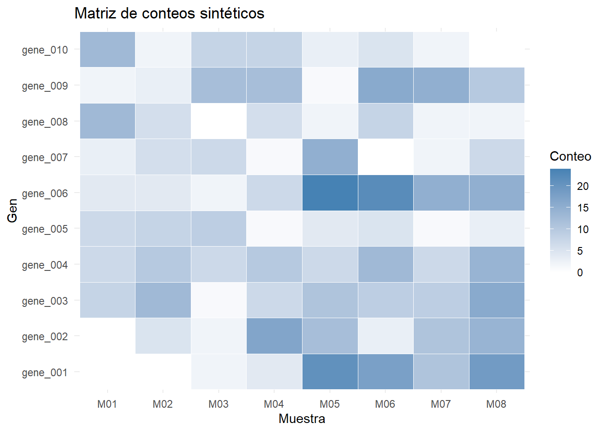
La escala de colores representa conteos sin normalizar. No es un mapa de calor de expresión diferencial.
Usando genes, construye un gráfico de barras horizontales con el número de genes por contig. Debe tener título, ejes en español y barras ordenadas de menor a mayor número.
gene_005 en las ocho muestras mediante puntos.gene_005 y gene_006 utilizando facetas.binwidth = 100.binwidth = 50. ¿Qué cambia visualmente? ¿Cambian los datos?El siguiente gráfico se ejecuta, pero tiene varios problemas:
ggplot(datos, aes(x = functional_category, y = conteo)) +
geom_col(fill = "red") +
labs(title = "Resultados")Identifica al menos cuatro problemas. Después escribe una versión que represente claramente una pregunta concreta.
Construye dos gráficos de dispersión de longitud frente a conteo usando datos después de crear longitud = end - start con mutate().
color = grupo dentro de ggplot(aes(...)).color = grupo dentro de geom_point(aes(...)).geom_hline(yintercept = 10) y explica por qué no cambia de color en ninguno de los casos.Construye un diagrama de dispersión con conteo en el eje vertical y gene_id en el horizontal. Utiliza coord_cartesian() para observar solamente el intervalo de 0 a 12 en el eje vertical, gira las etiquetas del eje horizontal y agrega un título que indique que se trata de datos sintéticos. ¿Se han borrado las observaciones fuera del intervalo?
A partir de comparacion:
gene_001 entre muestras.Para cada pregunta, propone una geometría y explica qué preparación de datos necesitas:
Después, elige una de las preguntas, construye su figura y escribe una interpretación de dos oraciones y una limitación.
Elabora un script scripts/05_figuras.R o un archivo .qmd que genere tres figuras a partir de los datos de la sesión:
Para cada figura, escribe dos o tres oraciones: qué muestra, qué pregunta responde y qué no puede concluirse. Guarda al menos una figura en PNG y otra en PDF, con nombres descriptivos. Evita pruebas estadísticas.
Este material fue modificado del material impartido en el curso intersemestral Code & Data Bootcamp: Git, Bash y R, secciones de visualización con ggplot2: